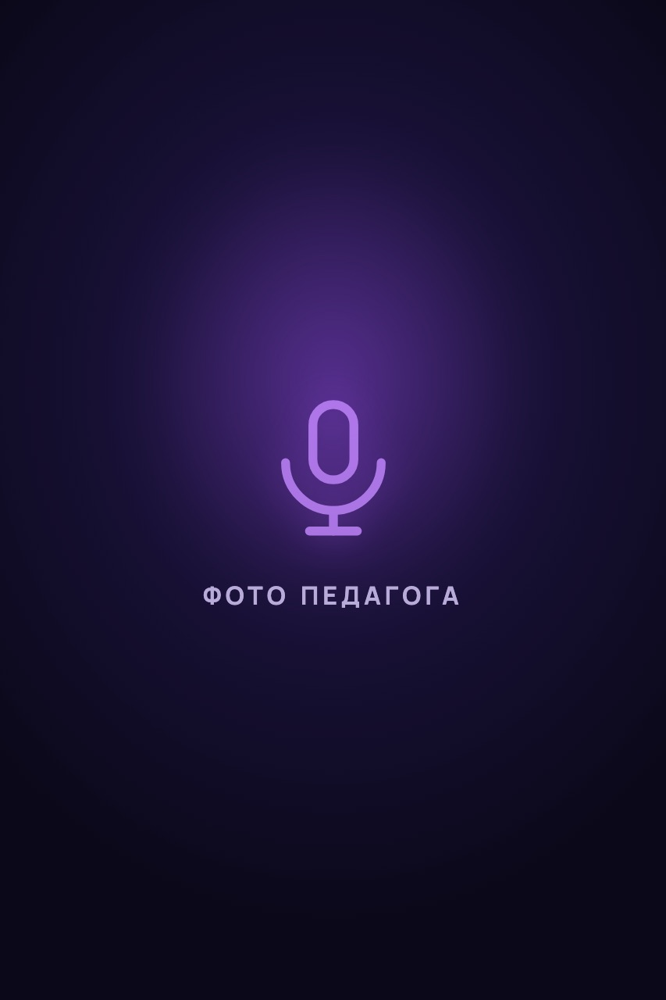

Давно мечтаете научиться петь
Откладывали «на потом» годами — а желание петь никуда не делось. Самое время начать.
О студии
«Звучно» — студия вокала в Санкт-Петербурге для взрослых и детей. Занимаемся онлайн или в уютной студии в 5 минутах от метро «Сенная площадь»
Откладывали «на потом» годами — а желание петь никуда не делось. Самое время начать.
Неловко петь даже наедине с собой. Здесь безопасная атмосфера без оценок и сравнений.
Кажется, что «медведь на ухо наступил». Чистая интонация — навык, и он тренируется.
Мечтаете о сцене, караоке без страха или уверенном голосе на публике.
Есть опыт, но чувствуете потолок: дыхание, диапазон, свобода звука — есть куда расти.
Вам нужен внимательный слух педагога, чтобы отшлифовать то, что уже работает.
Зачем это всё
Ваш голос — ваш инструмент. Научим играть на нём свободно
Дыхание, опора, диапазон — голос слушается вас, а не наоборот.
Голос звучит смелее — и это чувствуется далеко за пределами занятий.
Репертуар собираем из музыки, которую вы действительно хотите петь.
Цель выбираете вы — концерт, вечер с друзьями или запись любимого трека.
Как это устроено
Первый шаг — бесплатно
Исполните свою мечту о свободном вокале!
Как заниматься
Стоимость — по запросу
Стоимость — по запросу
С кем вы занимаетесь
Профессиональная певица, дипломированный педагог по эстрадному и академическому вокалу
6 летопыт преподавания
18 летмузыкальный опыт
«Я помогу вам преодолеть вокальные трудности и улучшить навыки управления голосом!»
Полина Мирзоева, педагог студии «Звучно»

Здесь будет короткое описание: кто по профессии и по каким направлениям преподаёт
— летопыт преподавания
— летмузыкальный опыт
«Здесь будет фраза педагога о своём подходе к занятиям»
Имя педагога, педагог студии «Звучно»
Сцена
Почувствуй себя настоящим артистом
Подарок
Занятия вокалом можно подарить близкому человеку
Подарочный сертификат
Студия вокала «Звучно»
Оффлайн и онлайн
В 5 минутах пешком от метро «Сенная площадь». Тёплое пространство, где комфортно распеваться, ошибаться и пробовать снова.
ул. Садовая, 28–30
Занимайтесь из дома или из поездки — нужны только телефон или ноутбук и желание петь. Формат и программа такие же, как в студии.
Подходит для любого города и часового пояса
Отзывы
Здесь скоро появятся отзывы учеников студии
Частые вопросы
Да. К нам приходят и те, кто никогда не пел вслух. Голос — это навык, который развивается на занятиях: Полина подбирает упражнения под ваш уровень и ведёт вас шаг за шагом, в комфортном темпе.
Это очень частое чувство, и с ним нормально приходить. На занятиях нет оценок и сравнений — только внимательная работа с вашим голосом. По мере того как голос слушается всё лучше, растёт и уверенность.
Это бесплатная встреча на 30 минут — онлайн или в студии. Вы познакомитесь с методикой педагога, мы найдём сильные и слабые стороны голоса, определим индивидуальный план развития и покажем, как петь свободнее. Никаких обязательств продолжать нет.
Специальный «врождённый дар» не нужен. Музыкальный слух и координация голоса — тренируемые навыки, как и всё остальное в вокале. На консультации мы посмотрим, с чего именно стоит начать вам.
Онлайн-занятия идут по той же программе и с тем же вниманием педагога. Достаточно телефона или ноутбука со стабильным интернетом. Многим этот формат даже удобнее: можно заниматься из дома в привычной обстановке. А ещё форматы можно сочетать.
В уютной студии в Санкт-Петербурге, в 5 минутах от метро «Сенная площадь», или онлайн из любой точки мира — как вам удобнее.
Начните с бесплатной вокальной консультации — 30 минут, онлайн или в студии
Записаться на бесплатную консультацию